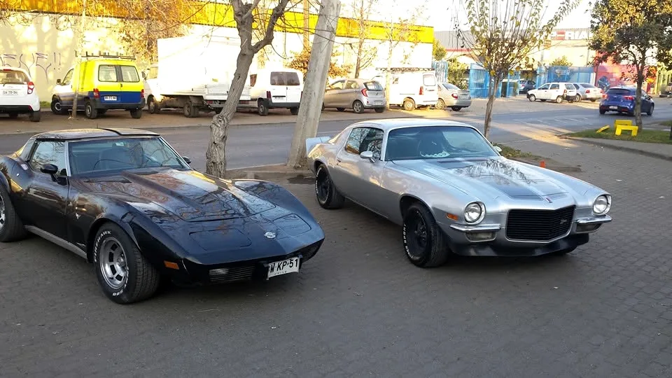
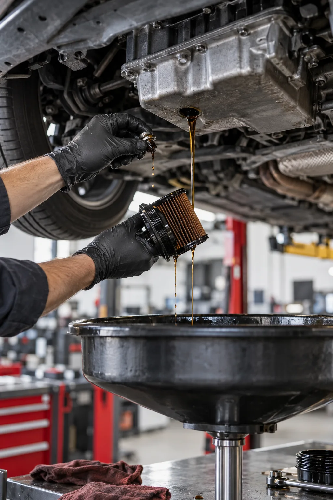

Lubricación y mantenciones
Cambio de aceite y filtros, mantenciones por kilometraje y revisión preventiva para seguir rodando con tranquilidad.
Consultar servicioTaller multimarca · Peñalolén
Mecánica, lubricación y cuidado exterior en un solo lugar. Te ayudamos a volver al camino con confianza.
EL TALLER DETRÁS DEL LOGO
GTI Ltda es un taller familiar de Peñalolén. Desde 2000 combina atención cercana con servicios que van desde la mantención cotidiana hasta reparaciones de mayor complejidad.
Su lubricentro atiende trabajos rápidos de forma independiente del taller, y su equipo también aborda diagnóstico, mecánica multimarca, desabolladura y pintura.
Conoce dónde estamos
LO QUE HACEMOS
Cuéntanos qué le pasa a tu vehículo. En GTI encontrarás el servicio adecuado, desde la prevención hasta la reparación.
Cambio de aceite y filtros, mantenciones por kilometraje y revisión preventiva para seguir rodando con tranquilidad.
Consultar servicioRevisión con scanner y evaluación técnica para identificar el origen de una falla antes de avanzar con la reparación.
Consultar servicioReparaciones de motor, correas, distribución y otros sistemas esenciales para vehículos de distintas marcas.
Consultar servicioAtención a componentes que influyen directamente en el control, la estabilidad y la seguridad de tu vehículo.
Consultar servicioTrabajo de carrocería y pintura en sala acondicionada para cuidar el acabado exterior de tu auto.
Consultar servicioExperiencia en seguimiento de vehículos de empresa, con historial por patente y comunicación con encargados.
Consultar servicioASÍ TRABAJAMOS
Una buena reparación empieza por entender el problema. Escríbenos, cuéntanos qué notas en tu vehículo y coordinemos la mejor forma de revisarlo.
Contar mi caso
CUIDAR HOY / EVITAR MAÑANACUIDADO INTELIGENTE
Pequeñas señales pueden anticipar una reparación mayor. Aquí van tres que conviene conocer.
Con el uso pierde propiedades y acumula contaminantes. Cambiarlo junto al filtro según el manual de tu vehículo ayuda a proteger el motor. El intervalo depende del modelo, del aceite y de cómo conduces.
Chirridos, vibraciones o un pedal distinto pueden indicar desgaste o una falla. Conviene revisar el sistema antes de que el problema afecte otras piezas.
El scanner ayuda a orientar el diagnóstico, pero el código por sí solo no cuenta toda la historia. Una evaluación técnica permite encontrar la causa real.
LA CONFIANZA SE GANA TRABAJANDO
Clientes que vuelven durante años. Una comunidad que comparte su experiencia. Ese es el trabajo que más nos representa.
Ver opiniones en Google★★★★★“Amabilidad, rapidez, profesionalismo, confianza. Llevo hace muchos años mi vehículo a ese taller.”
VEN A GTI
Estamos en Av. Oriental 5874, Peñalolén, Santiago. Escríbenos antes de venir para coordinar la atención de tu vehículo.